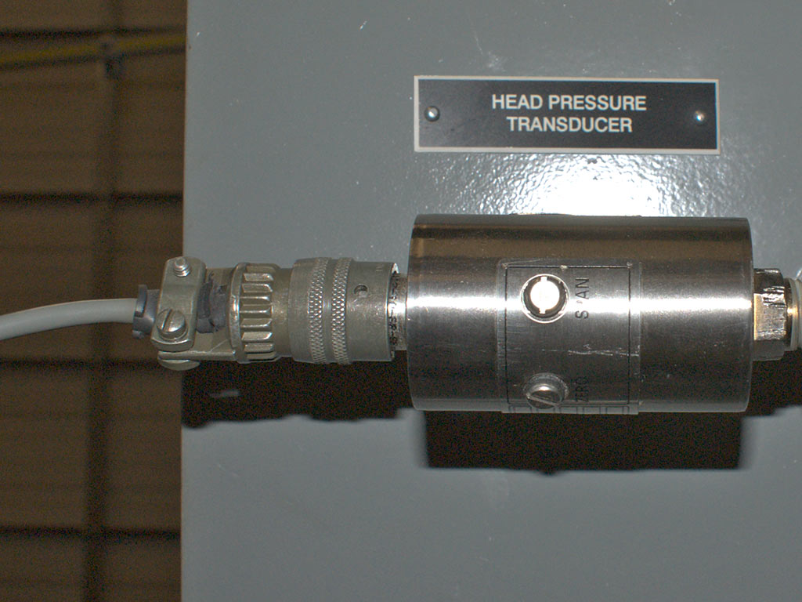
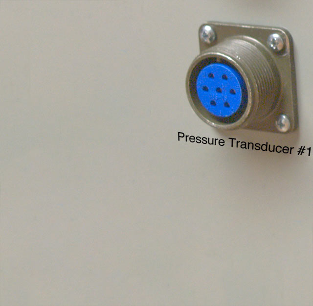

The supplied cable has metal connectors on each end. The smaller, six socket bayonet connector connects to the pressure transducer (a Viatran transducer is shown here).
The larger end is a seven pin male plug that connects to the corresponding female connector on the panel.
